The Wedding of
Sakha
&
Iqbal
#SiLastOne
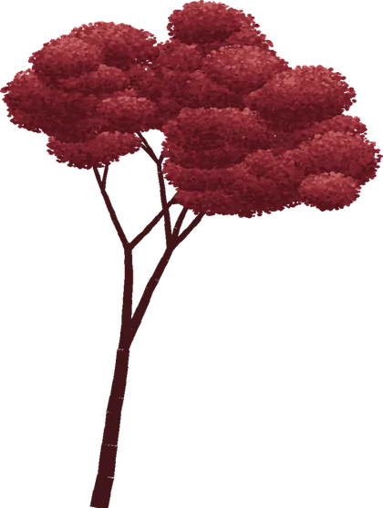
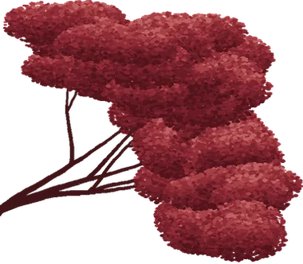
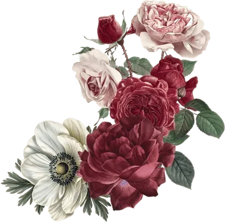
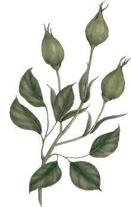
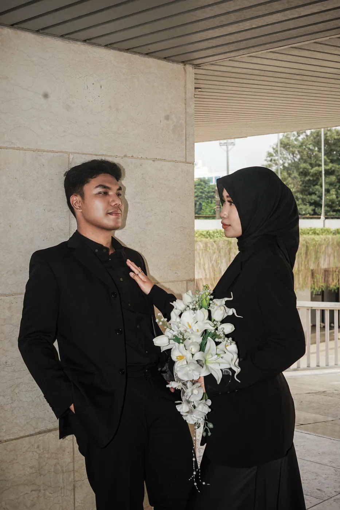
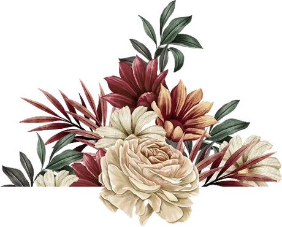
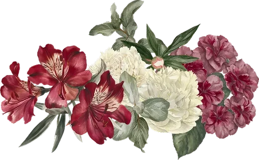
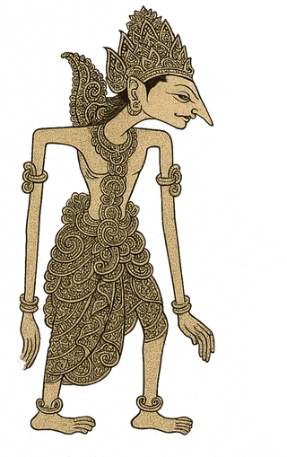
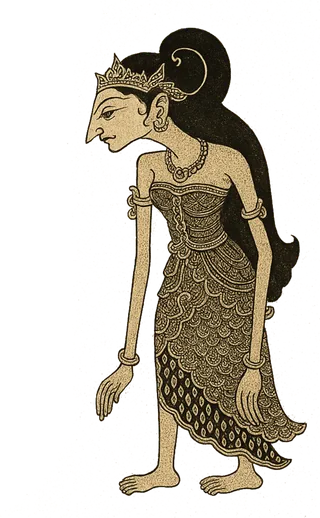
Dengan penuh sukacita dan rasa syukur, kami mengundang Bapak/Ibu/Saudara/i untuk hadir dan memberikan doa restu pada pernikahan kami:
Sakha
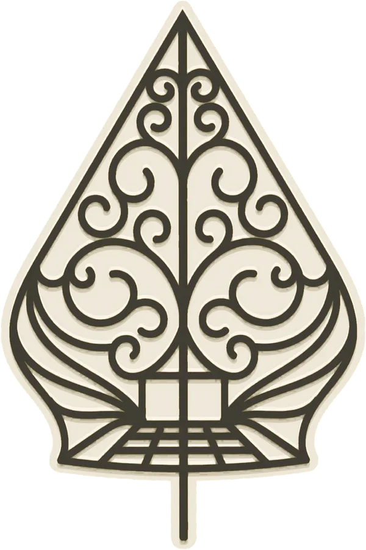
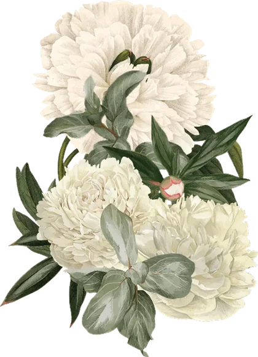
Betari Sakha Pratiwi
Putri dari
Bapak Tawiyanto (Alm.)
& Ibu Suprapti
Iqbal
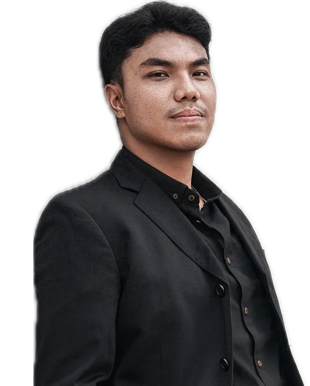
Muhammad Iqbal Bakhri Siagian
Putra dari
Bapak H. Syaiful Bakhri Siagian
& Ibu Rosliena
Siregar
“And one of His signs is that He created for you spouses from among yourselves so that you may find comfort in them. And He has placed between you compassion and mercy. Surely in this are signs for people who reflect.”
QS. Ar-Rum: 21
Our Gallery
Geser foto, klik untuk memperbesar
Wedding Gift
Doa restu dan kehadiran Anda merupakan karunia yang sangat berarti bagi kami. Namun, jika memberi adalah ungkapan tanda kasih, Anda dapat memberi melalui kado di bawah ini.
Klik kado untuk membuka
Ucapan & Doa
Kirimkan doa dan ucapan terbaik untuk kami.